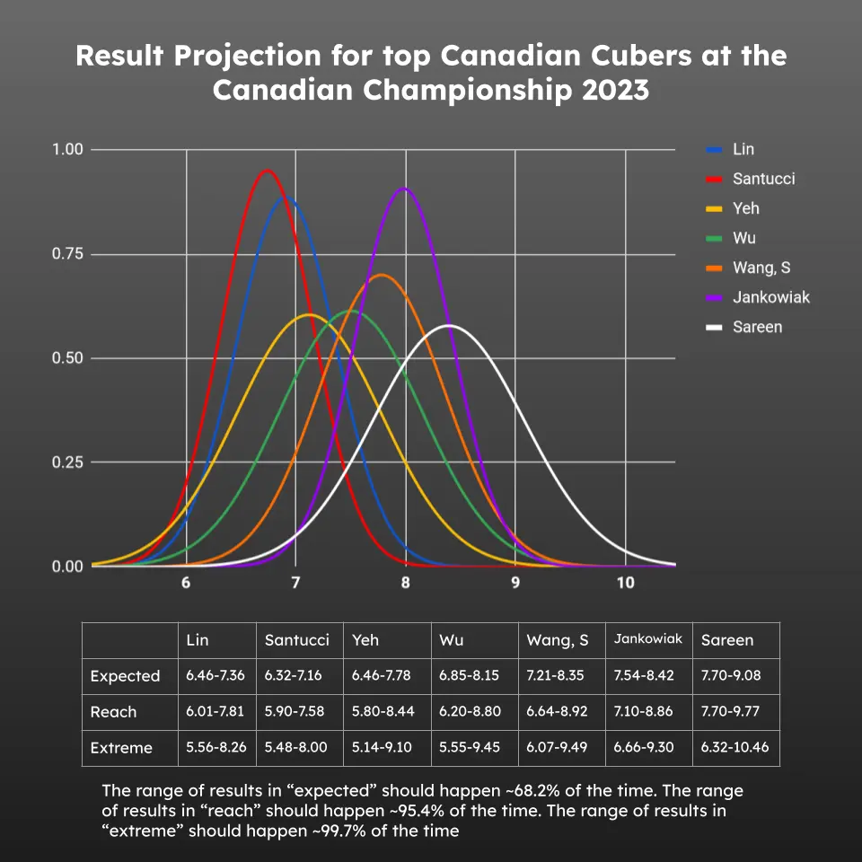
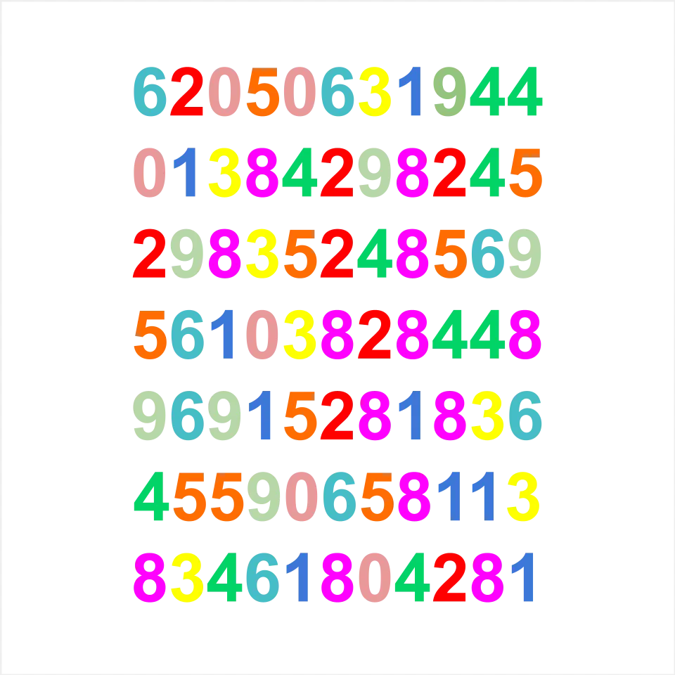
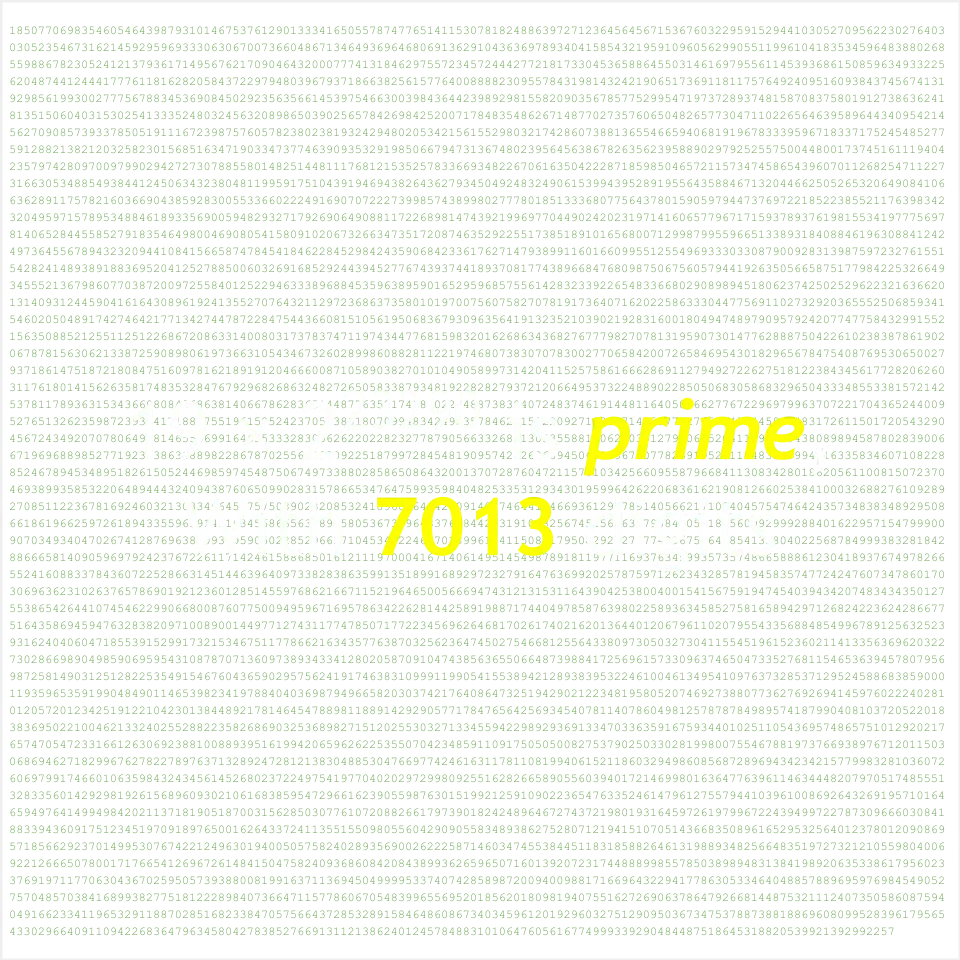
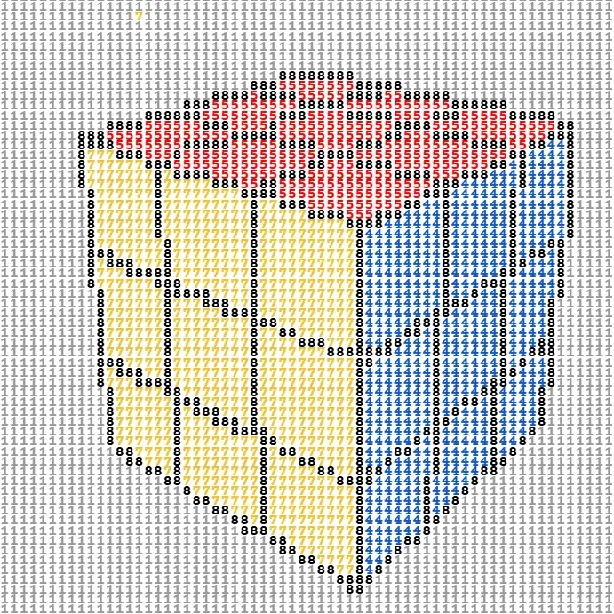

Projects
July 16, 2023
Statistical Prediction of the 2023 Rubik's Cube Canadian Champion
The 2023 Rubik's Cube Canadian Championship was well underway. Defending champion Bill Wang elected not to participate that year, meaning that a new national champion would be crowned.
With the semifinal results released and four hours remaining before the final, I compiled my predictions for who would succeed Mr. Wang for the title.
Read Article →
Prime Numbers Museum
I have always been fascinated by prime numbers. This collection brings together large, unusual, and artistic primes that I have found.


